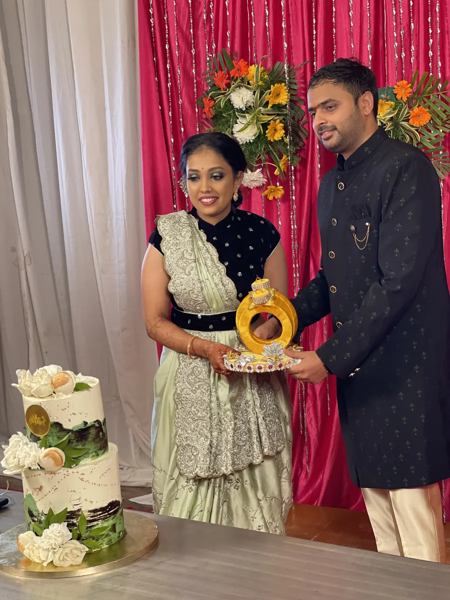
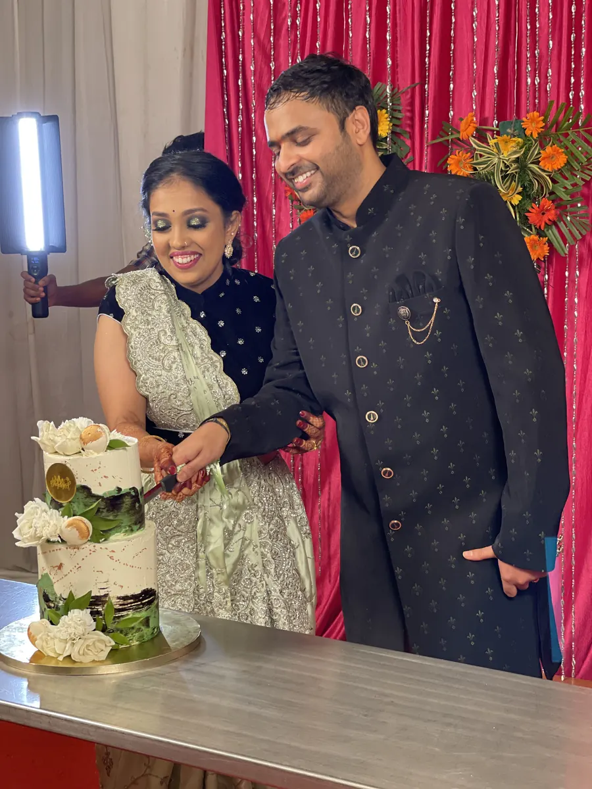
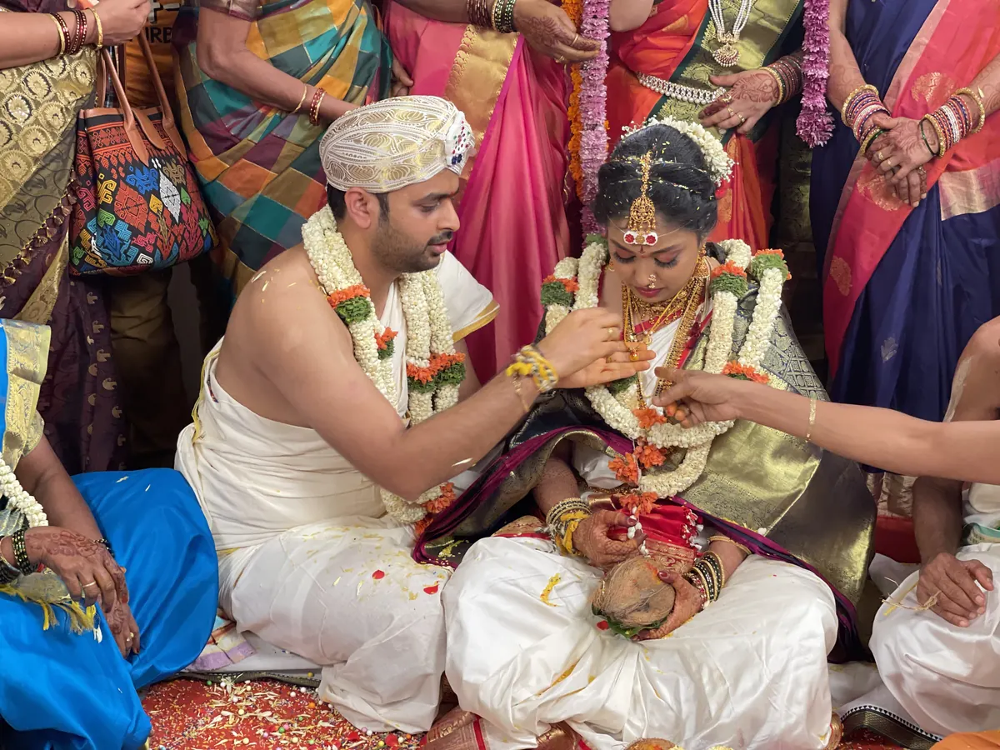
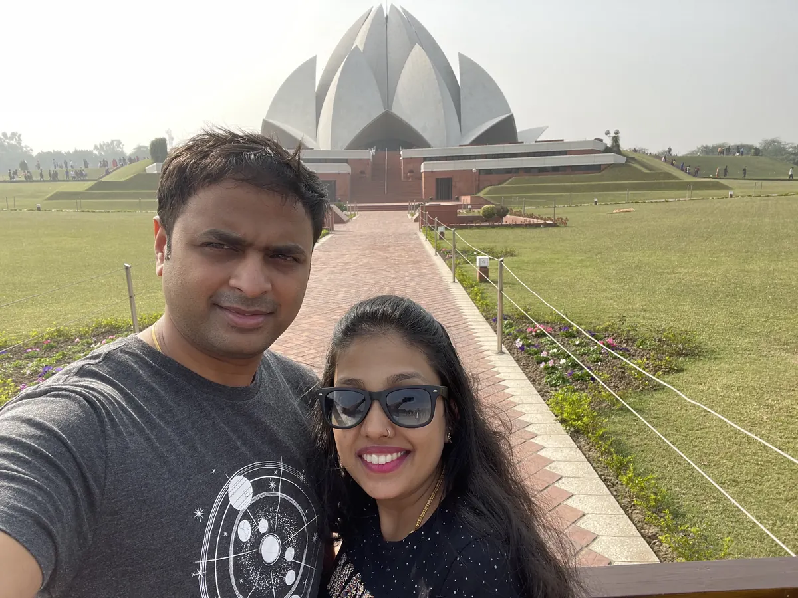
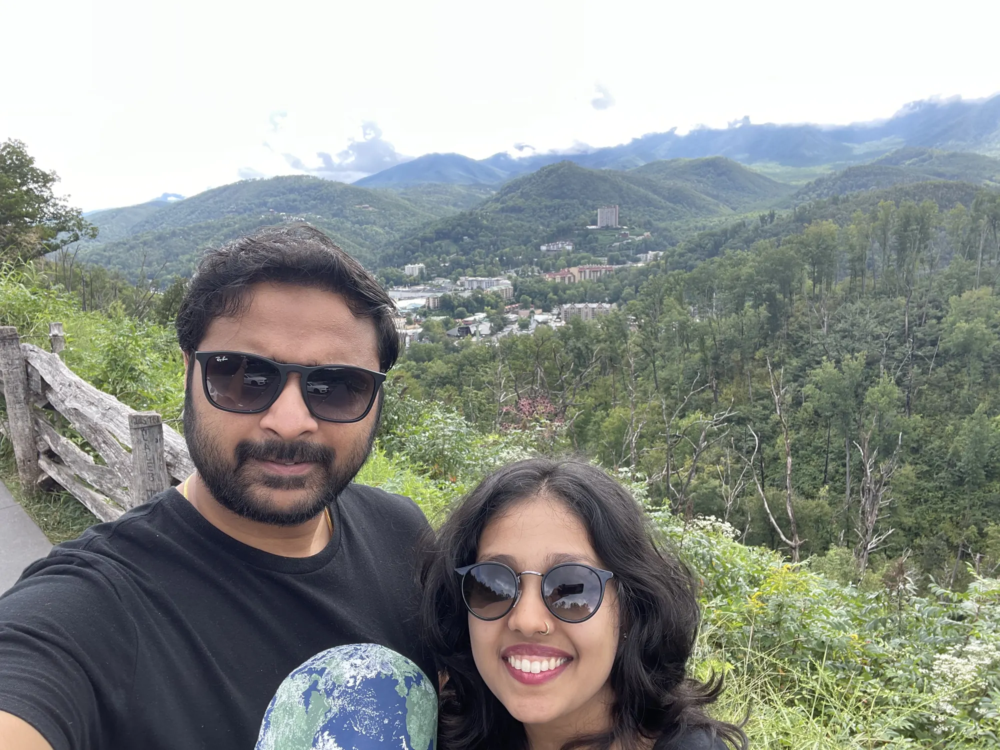
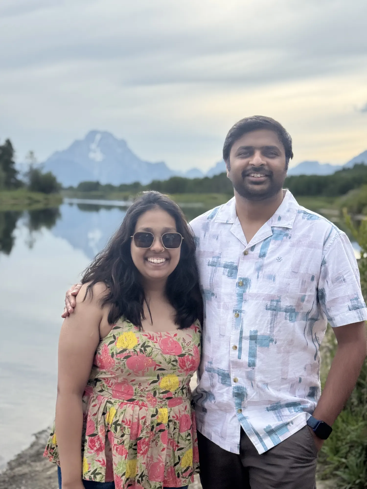
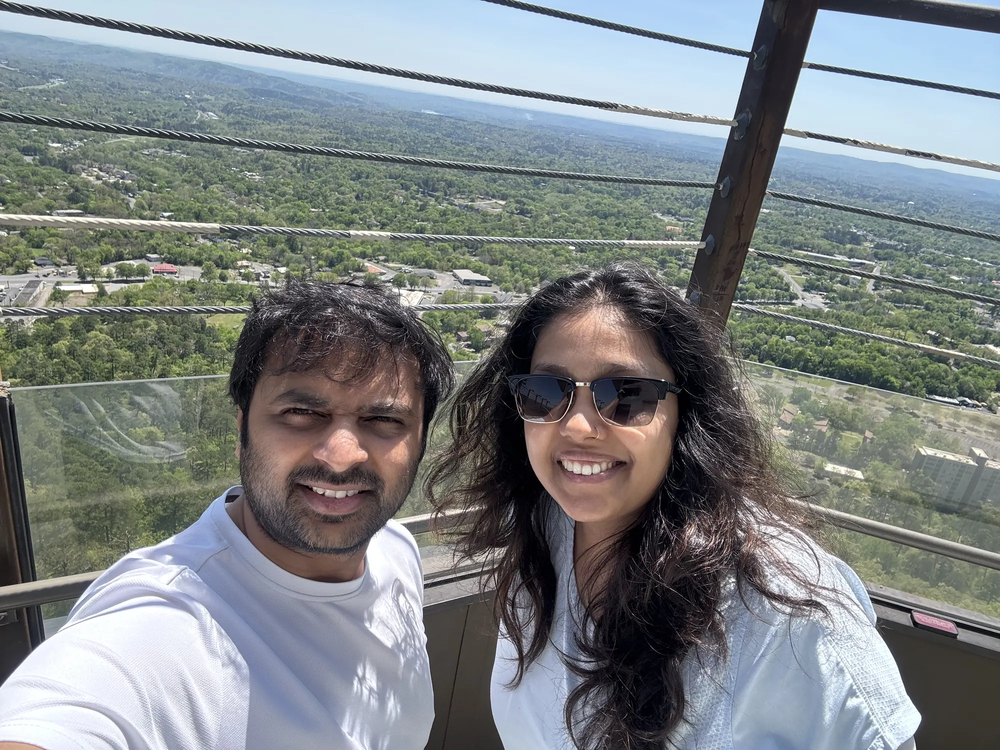
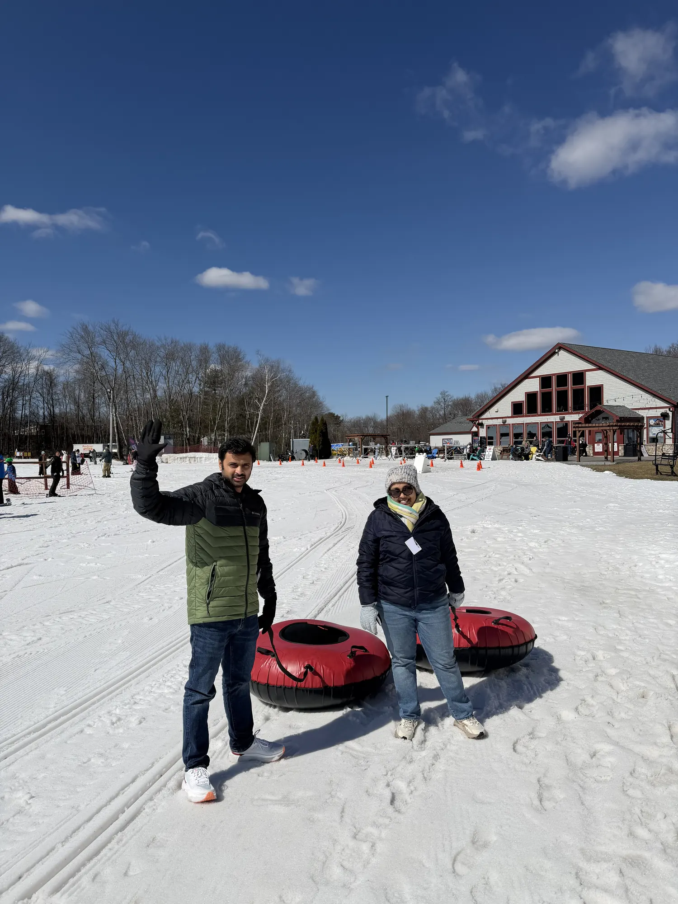
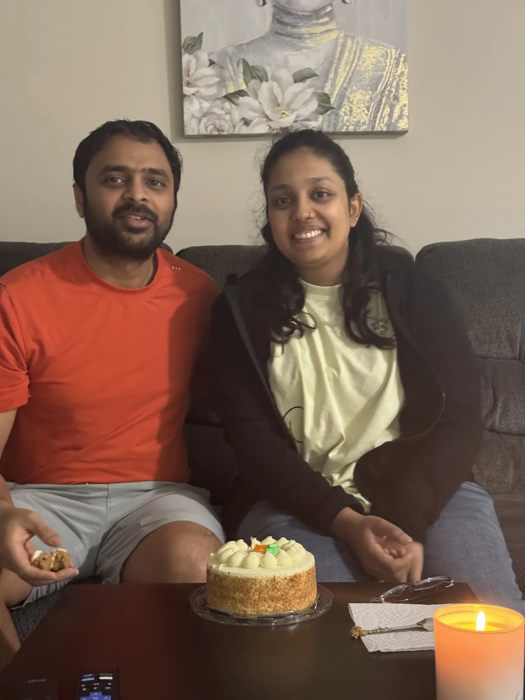

Five years.
Still us.
Sujith & Sahana. One wedding, five years, and a long road ahead.
Five years ago we made a promise. Since then, a thousand ordinary days have turned out to be the best ones.

The day we
said yes.
The vows, the rings, the people we love, and a dance floor we didn't leave until the end.
Moments from the wedding





Five years,
one ring at a time.
Keep scrolling. Each year slides over the last, like the rings of a tree growing outward.

Mountains and road trips
Our first full year together, chasing views and long drives.
Coast to coast
Minions, Beverly Hills, a Disney castle and Miami sunshine.

Into the wild
Mountain lakes, geysers and national parks.

Views from the top
New heights, and a quiet fourth anniversary at home with cake.

Five years in, still choosing you
Snow days, waterfalls and city lights. Still us.
The road ahead.
Plans and dreams for the next five years.

See the northern lights
The trip we keep promising each other.

A home with a garden
Room for plants and too many guests.
Plant a tree
Wood for year five. A new tree every year after.
Next stop
Five years down. On to the tin anniversary, then the big one at ten.

Five years ago I promised to stand beside you. I didn't know how many ordinary days would turn out to be the best ones.
Here's to the next five, and every one after that.